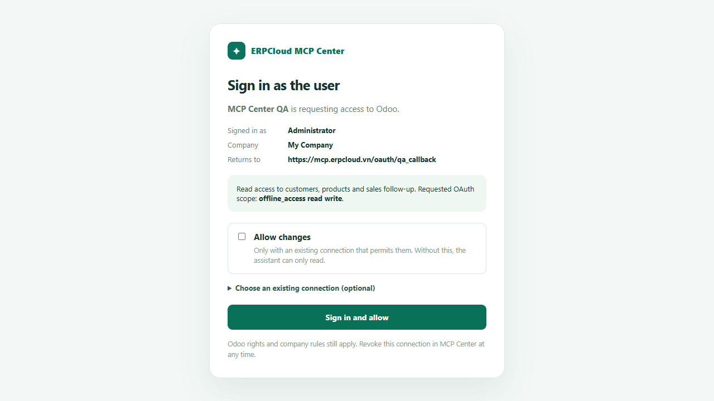
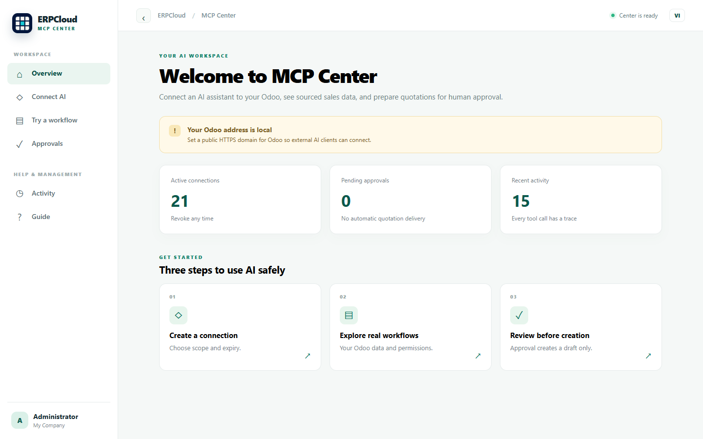
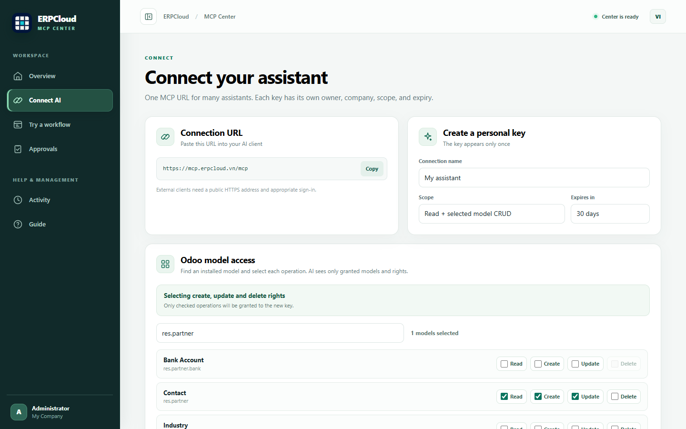
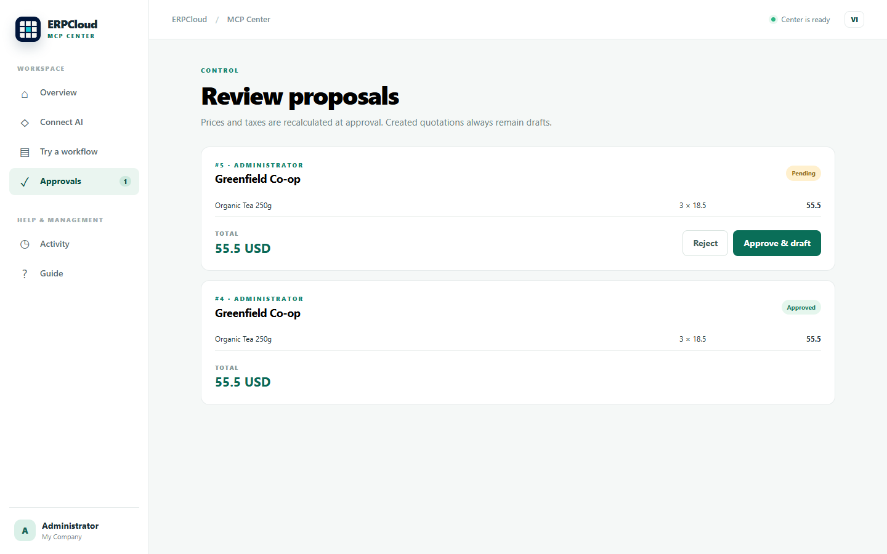
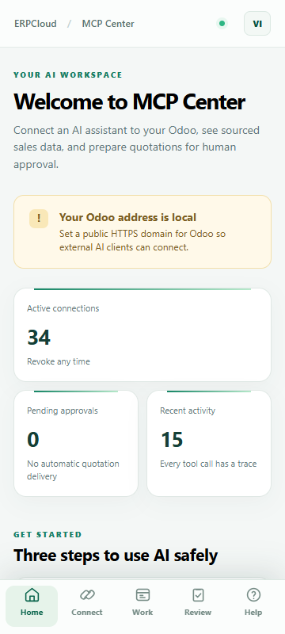

ERPCloud · ODOO 20 COMMUNITY
Choose Odoo models and CRUD permissions per connection. Get source-backed answers and keep quotation approvals in human hands.
Sign in as yourself. Give an OAuth-capable assistant the public MCP URL, log in to Odoo and review the application name, account and return address. A read-only connection is created automatically; no key is needed. Allow changes starts unticked and requires a manager-approved connection with specific model rights.

MCP Center opens from its own root menu. Create a personal connection, choose the exact Odoo data and workflow permissions, copy the MCP URL, and review connection activity. The desktop sidebar collapses to make room for work; the mobile interface has its own navigation. Vietnamese and English interface copy is included.

Search installed persistent Odoo models. Grant read, create, update or delete to an individual connection; an MCP Center manager controls write scope. The token's grants always intersect with Odoo ACLs, record rules and company access. Generic tools expose bounded, safe fields; writes use idempotency keys and deletion requires an exact model/record confirmation. Curated customer, product and quotation workflows remain available alongside generic model access.

AI proposals appear in a dedicated review page. An approver sees the exact customer, product lines and total before a draft quotation is created. This screenshot is from a clean QA database with sample business records.

Read-only by default. Named, expiring and revocable keys. OAuth with PKCE and an explicit connection/grant selector on the consent page. Per-key request limits and activity trace IDs. No arbitrary method execution, SQL, automatic order confirmation or sending.

erpcloud_mcp_center into your addons path, refresh Apps and install it.Dependencies: Odoo 20 Community base, web, sale. No ERPCloud private addon. No sample customer/product data is installed. The initial release focuses on sales quotations.
Support: info@erpcloud.vn · License: LGPL-3.0